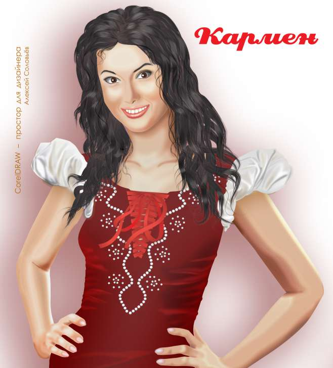
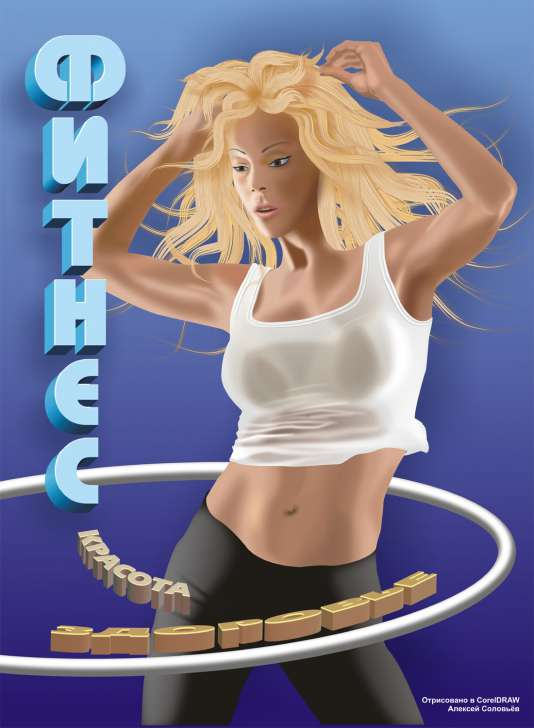
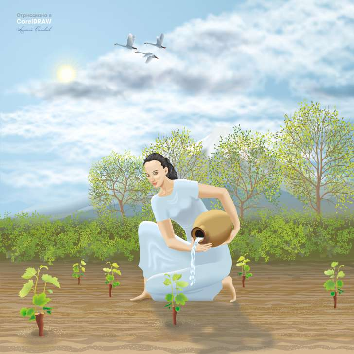

Векторно-растровая графика
Solowejka / 15.04.2012, 07:27/00:41
Форум:
Часто бывает так, что рисунок содержит и векторные и растровые элементы.
Такие работы, даже если были созданы в CorelDRAW, не достойны попасть в векторный арт?
Вот, например, хотел бы загрузить работу, точнее фрагмент. Весит 7,09 Мб.

не достойны, потому что "мухи отдельно, котлеты отдельно" ИМХО. сейчас у обоих сторон валом примочек для создания вышакового продукта, в этом вся прелесть и мастерство...
Все верно, векторный арт - это вектор. А что мешало тоже самое сделать полностью в векторе? Уроков, как сделать ткань (драпировку) уйма...
Вот именно такая задача, сделать в векторе, и была поставлена изначально.
Хотел освоить заливку по сетке. Красная ткань над её рукой — заливка по сетке. Убил на это несколько вечеров и завял как пересаженный кустик. За выходные было отрисовано всё платье, но это уже растр. А волосы — вектор. Свою кисть сделал.
Нарисовалось.

Нарисовалось

Стеклянный бокал
Растровые облака против векторных.

Мир

Solowejka , почему бы и нет?
Если задача состоит в том, чтобы добиться реалистичного результата без лишних трудозатрат, то совмещать эти две техники бывает не только можно, но и нужно. Если что-то проще сделать в векторе, то это и следует делать в векторе, а что в векторе вырисовывать забодаешься – то практичнее сделать растром. Для такого метода и название официальное имеется – Vexel (векторно-пиксельная графика). Только векторным артом это уже не может считаться по определению.
В последней картинке листва кустарника очень понравилась. Сделано просто, но жуть как эффектно.
Ну и сама работа тоже очень позитивная :)
Sokolovich, спасибо, хотя как раз листву кустарника я сам не считаю идеальной, это мои опыты.
А вот такие облака отрисовывать в векторе не то, что забодаешься, я сомневаюсь, что вообще возможно.
Страницы